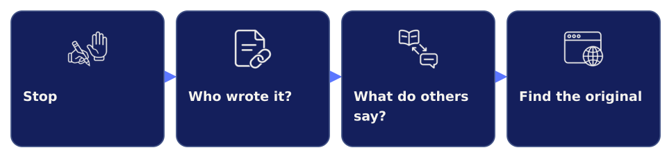
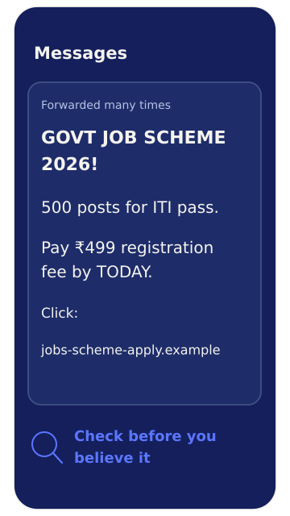

Does ChatGPT tell the truth?
OpenAI Help CenterArticleAbout 5 minFree, no login
An AI answer can sound sure and still be wrong. Use it as a first draft, not as the final word.
Everything here is optional. The links go to other websites, so read these 3 rules first.
Your task. Tap each card to read the rule.
These links were last checked on 7 Oct 2026.
The companies that make these tools say this themselves. You can read it on their own help pages.
Your task. Tap Open to read one article in a new tab.
An AI answer can sound sure and still be wrong. Use it as a first draft, not as the final word.
A second company says the same thing. So this is how these tools work, and it is not the fault of one tool.
Many searches now show an AI summary at the top. Check it like any other AI answer.
Your task. Tap Open to learn how to see the websites behind the summary.
It shows how to open the websites behind the AI summary. Then you can check those websites.
These 2 links teach you simple ways to check a claim. You can start with either one.

Your task. Tap Open on the link you want to try.
It gives you 4 steps. Stop, check who wrote it, find other sources, and go back to the original.
These short videos show you how to check a claim. You see what other trusted sources say about it.
Episode 1 is enough to start.
Some messages about jobs and government schemes are fake. Check a message here before you believe it.

See exampleA fake job messageYour task. Tap Open to check a claim on one of these sites.
It checks messages about government schemes, jobs and notices. These messages often have fake dates and fees.
Type a claim to see if fact-checkers have already checked it. You also see what they found.
Section R3 of your Personal AI Rulebook is called “How I check”. Write 1 source there for your own trade or subject.
Your task. Tap the source you will write in section R3.
Where will you check AI answers?
Example